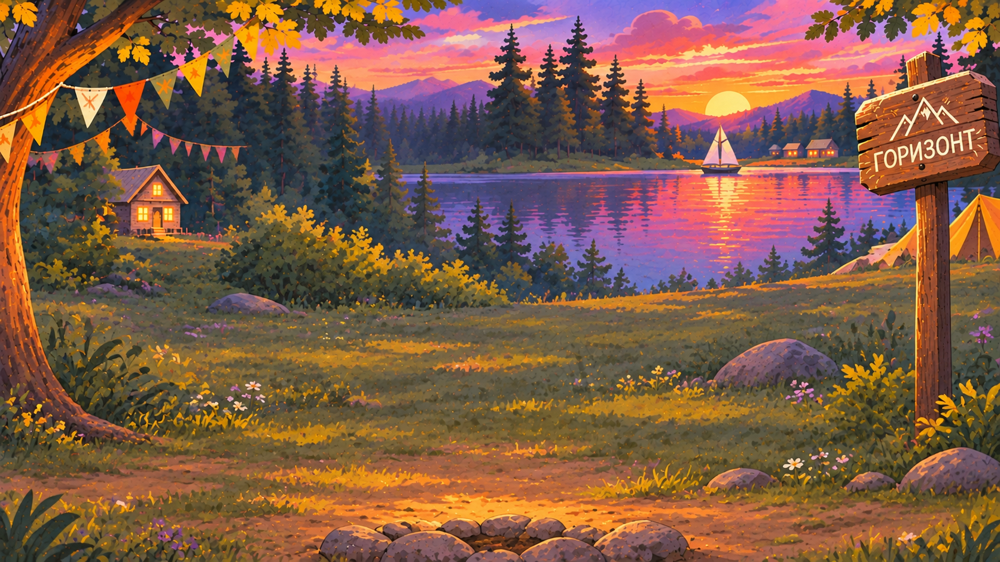
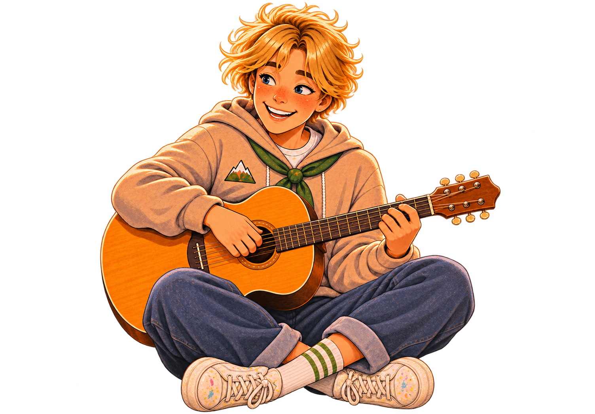
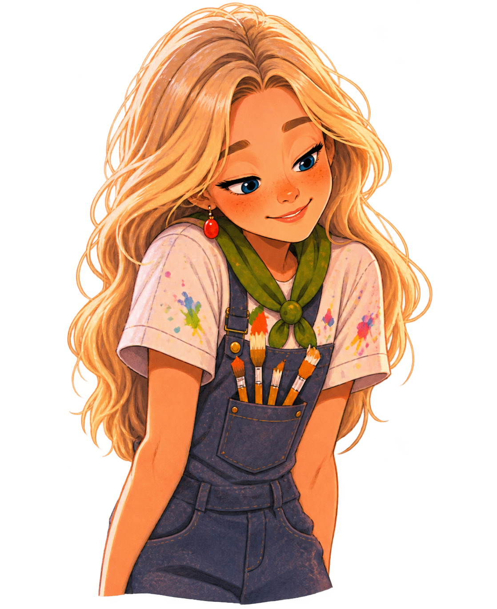
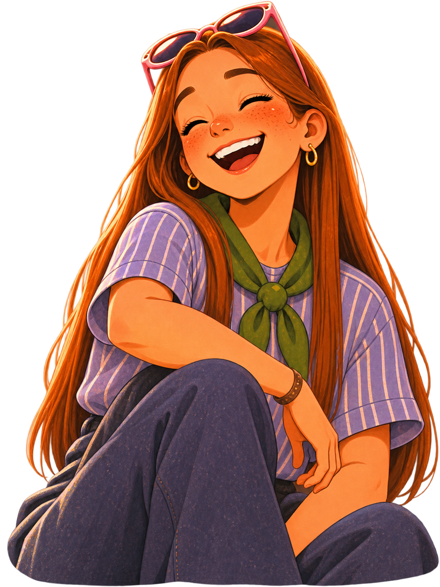
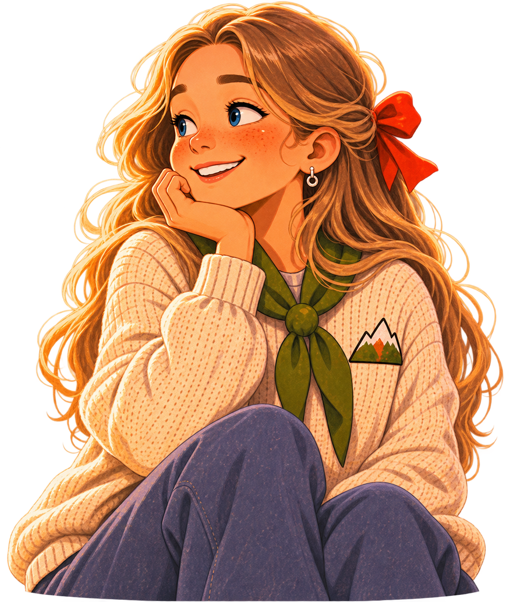
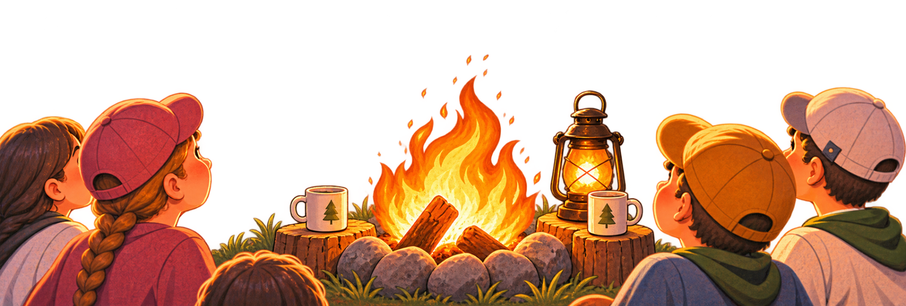

<!-- CSS находится в index.html внутри style#counselors-block-css -->
<section class="counselors-section" id="guides" aria-label="Вожатые">
  <div class="counselors-stage" id="counselorsStage">
    
    
    
    
    
    
    
    
    <button class="counselor-hit c-hit-matvey" data-counselor="matvey" type="button" aria-label="Открыть историю Матвея"></button>
    <button class="counselor-hit c-hit-anya" data-counselor="anya" type="button" aria-label="Открыть историю Ани"></button>
    <button class="counselor-hit c-hit-polina" data-counselor="polina" type="button" aria-label="Открыть историю Полины"></button>
    <button class="counselor-hit c-hit-sonya" data-counselor="sonya" type="button" aria-label="Открыть историю Сони"></button>
    <div class="counselors-hint">нажми на вожатого — познакомимся поближе</div>
  </div>
</section>
<div class="counselors-shade" id="counselorsShade"></div>
<div class="counselors-modal" id="counselorsModal" role="dialog" aria-modal="true" aria-labelledby="counselorsName">
  <div class="counselors-card">
    <button class="counselors-close" id="counselorsClose" type="button" aria-label="Закрыть">×</button>
    <div class="counselors-person-wrap"></div>
    <article class="counselors-info"><h2 class="counselors-name" id="counselorsName"></h2><p class="counselors-text" id="counselorsText"></p><blockquote class="counselors-quote" id="counselorsQuote" hidden></blockquote></article>
  </div>
</div>


<script id="counselors-block-js">
(function(){
  const stage=document.getElementById('counselorsStage');
  if(!stage) return;
  const section=document.getElementById('guides');
  const layers=[...stage.querySelectorAll('.counselors-layer')];
  let px=0,py=0,raf=0;
  const depth=[.35,.75,.8,1.8,2.0,2.2,2.4,2.8];
  function render(){layers.forEach((el,i)=>{const d=depth[i]||1;el.style.transform=`translate3d(${px*d}px,${py*d*.55}px,0)`});raf=0}
  stage.addEventListener('pointermove',e=>{
    if(window.innerWidth<700) return;
    const r=stage.getBoundingClientRect();
    px=((e.clientX-r.left)/r.width-.5)*7; py=((e.clientY-r.top)/r.height-.5)*5;
    if(!raf) raf=requestAnimationFrame(render);
  },{passive:true});
  stage.addEventListener('pointerleave',()=>{px=py=0;if(!raf)raf=requestAnimationFrame(render)});

  const data={
    matvey:{name:'Матвей',img:'assets/counselors/matvey.png',text:'Абсолютный слэй нашего лагеря! Матвей прошёл путь от любимого вожатого до культорга «Горизонта», и теперь уровень движа зашкаливает на максимуме. Он на одной волне с ребятами: шарит за все актуальные тренды, мемы и звуки из ТикТока, а скучные сценарии обходит за километр. Если на сцене Матвей — зал гарантированно стоит на ушах! Он делает так, чтобы каждое лагерное шоу выглядело как топовый концерт, а каждый ребёнок чувствовал себя главной звездой.'},
    anya:{name:'Аня',img:'assets/counselors/anya.png',text:'Ещё недавно Аня сидела в отрядном кругу как ребёнок, а летом 2026 года впервые надела вожатский галстук — сразу после выпуска из нашей Школы вожатых. Она пришла в команду со свежим взглядом, бешеной отдачей и невероятным художественным вкусом: Аня превращает любой отрядный уголок или сценический грим в произведение искусства. Она не строит из себя строгого наставника, а становится для детей понимающим старшим другом, с которым не страшно пробовать новое, ошибаться и побеждать.'},
    polina:{name:'Полина',img:'assets/counselors/polina.png',text:'Человек-зажигалка, рядом с которой просто невозможно стоять на месте. Полина знает миллион игр, может раскачать даже самый сонный отряд и превратить уборку комнат в захватывающий квест. Она обожает командные победы и умеет создать такую сплочённость, что к концу смены все становятся лучшими друзьями. Её девиз: «Скучать будем дома, а здесь — зажигаем!»'},
    sonya:{name:'Соня',img:'assets/counselors/sonya.png',text:'Соня в палаточном лагере с самого первого дня его открытия: каждое лето приезжала сюда ребёнком, а повзрослев, вернулась уже вожатой. Она знает, как развеять любую грусть на вечернем огоньке, а своей улыбкой и танцами умеет зажигать огонь даже в самых робких детских сердцах. Соня искренне верит, что в каждом ребёнке прячется звёздочка, которой просто нужно помочь засиять. А если новичок скучает по дому, она тепло обнимет и тихо скажет: «Не бойся, ты дома».',quote:'«Когда-то „Горизонт“ зажёг моё сердце, а теперь я каждый день зажигаю этот огонёк в глазах своих детей».'}
  };
  const modal=document.getElementById('counselorsModal'),shade=document.getElementById('counselorsShade'),person=document.getElementById('counselorsPerson'),name=document.getElementById('counselorsName'),text=document.getElementById('counselorsText'),quote=document.getElementById('counselorsQuote');
  function open(k){const p=data[k];if(!p)return;person.src=p.img;person.alt=p.name;name.textContent=p.name;text.textContent=p.text;quote.hidden=!p.quote;quote.textContent=p.quote||'';modal.classList.add('open');shade.style.opacity='1';shade.style.visibility='visible';section.classList.add('is-open');document.body.style.overflow='hidden'}
  function close(){modal.classList.remove('open');shade.style.opacity='0';shade.style.visibility='hidden';section.classList.remove('is-open');document.body.style.overflow=''}
  stage.querySelectorAll('.counselor-hit').forEach(b=>b.addEventListener('click',()=>open(b.dataset.counselor)));
  document.getElementById('counselorsClose').addEventListener('click',close);shade.addEventListener('click',close);document.addEventListener('keydown',e=>{if(e.key==='Escape')close()});
})();
</script>
